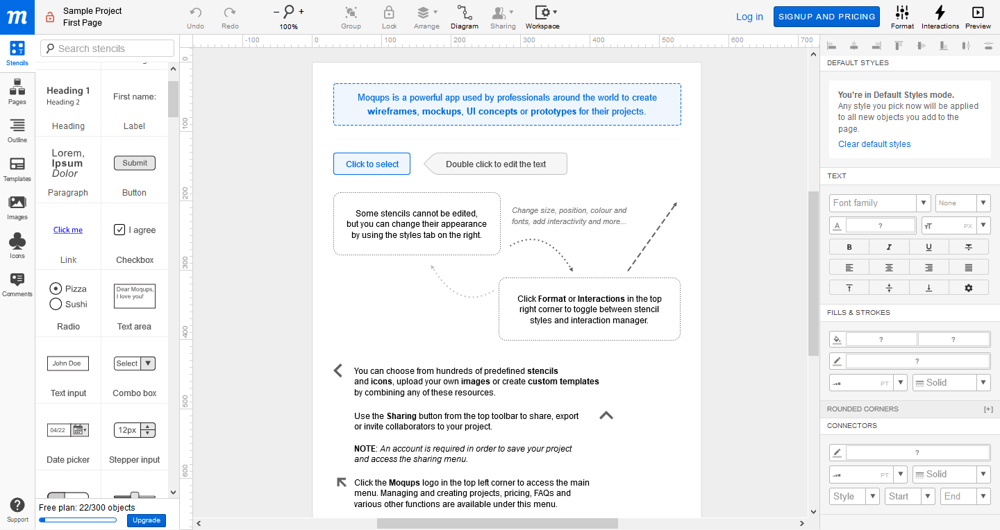

Especially for large apps it is highly recommended to think about your app’s design and behaviour before you start developing. The
process is called UI/UX design, prototyping or mockup generation. There are lots of free websites for this task, e.g.
moqups.com, draw.io or Adobe XD.
Some of them allow you to create a prototype with behaviour when you click buttons. Various design are available, e.g. Material design,
iOS design elements, website elements and very schematic elements. You can also use my pdf below to create a mockup manually. You can
draw your components and think about what your screen should do. This is also useful to keep an overview how and what values are stored
in your variables. An advice from me is also that it’s good to use Screen1 as a splash screen, because that makes it easier to
change the order of your screens afterwards.
